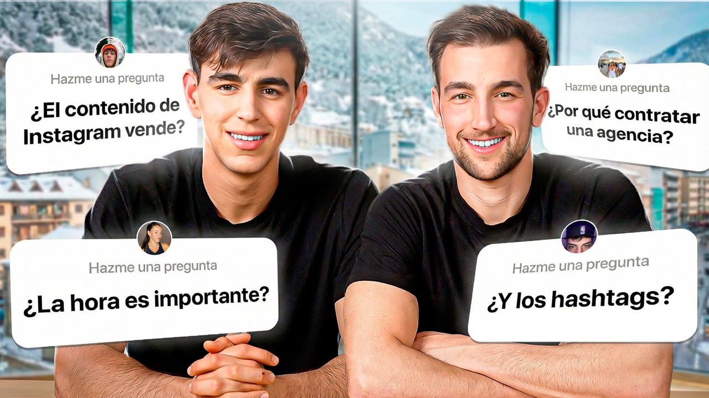

Los mitos más extendidos sobre las redes sociales sostienen que la hora de publicación es determinante, que los hashtags hacen viral un vídeo y que es necesario llegar a millones de personas para vender. La experiencia de Mediatic, agencia especializada en contenido orgánico, apunta en otra dirección: el resultado depende de la estrategia, es decir, de la idea, el formato y el guion, y de que las visualizaciones procedan de personas con potencial de compra.
El equipo de Mediatic recoge en un vídeo las preguntas más frecuentes que recibe de negocios y marcas personales sobre Instagram y el resto de plataformas. A continuación se ofrece el vídeo y un resumen por escrito, con ejemplos de clientes reales.

▶¿Importa la hora de publicar en Instagram?
La hora de publicación apenas influye en el resultado de un vídeo. Un vídeo atraviesa varias fases antes de llegar a la audiencia: idea, formato, guion, grabación, edición y, por último, publicación. La hora es solo un elemento menor de esa última fase.
A ello se suma un factor que suele pasarse por alto: el español no se habla únicamente en España. Cuando aquí es tarde, en Latinoamérica puede ser el momento de mayor consumo de contenido. Un vídeo de calidad funciona en esos mercados mientras España descansa y continúa haciéndolo cuando el país se despierta.
Mediatic lo comprobó con un cliente que concedía gran importancia a este aspecto. Un día falló la automatización de la publicación y el vídeo tuvo que subirse manualmente a las 11 de la noche, muy lejos del horario habitual, entre las 18:00 y las 19:00. Ese vídeo se convirtió en uno de los más vistos de la cuenta, con más de 90.000 personas alcanzadas, cuando el perfil contaba apenas con 2.000 seguidores.
La conclusión es que quienes empiezan a crear contenido obtienen más beneficio dedicando ese esfuerzo a mejorar la estrategia que a optimizar el horario.
¿Funcionan los hashtags en Instagram?
Los hashtags no determinan que un vídeo funcione. Antes se publicaban fotografías y vídeos con decenas de etiquetas para que la plataforma interpretara su temática. Hoy el escenario es distinto: Instagram transcribe el vídeo y entiende su contenido sin depender de ellas. De hecho, la propia plataforma ha limitado su uso a un máximo de cinco por publicación.
Mediatic ha publicado vídeos para clientes prácticamente sin hashtags que han obtenido buenos resultados. Se trata de una herramienta complementaria y no de un factor decisivo. Para quienes deseen utilizarlos, una pauta sencilla es la siguiente:
- Dos hashtags relacionados con el tema concreto del vídeo.
- Dos hashtags relacionados con el nicho del contenido.
- Un hashtag con el nombre del perfil o de la marca.
¿El contenido de redes sociales vende?
El contenido genera ventas, y en gran volumen. Un vídeo en Instagram funciona como publicidad orgánica: del mismo modo que un anuncio se evalúa por los impactos que consigue, el contenido orgánico genera impactos sin necesidad de inversión en promoción. Para Mediatic, se trata de una de las mayores oportunidades actuales para generar ventas y confianza entre los clientes.
El proceso funciona como un embudo. La agencia se encarga de que la audiencia llegue al negocio. A partir de ahí, la conversión depende de quien lo gestiona: de las historias, las publicaciones, la rapidez al responder los mensajes y el cuidado de la comunidad.
La experiencia con clientes lo confirma. En algunos casos, con un volumen de visitas igual o incluso inferior al de otros, las ventas fueron muy superiores porque el negocio mantenía una presencia constante en historias y respondía de inmediato. Cuando esa labor de acompañamiento no existe, las visitas se quedan en lo que la agencia denomina visitas vacías. Vender con contenido es posible, pero exige atender a cada potencial cliente que llega.
¿Es mejor el contenido viral o el contenido de nicho?
Para vender, resulta más eficaz el contenido de nicho. Es habitual afirmar que hay que llegar a millones de personas para convertir ese alcance en ventas, pero esa idea no se sostiene. Tampoco es cierto que los vídeos de nicho no consigan visitas. La clave está en el equilibrio: combinar contenido viral y contenido de nicho sin salirse de la temática del negocio.
La diferencia se aprecia en dos vídeos de un mismo cliente, una agencia de marketing digital:
- Un vídeo muy viral, realizado antes de trabajar con Mediatic, le aportó unos 40.000 seguidores nuevos y ninguna venta. La cuenta creció, pero con seguidores de poca calidad, difíciles de convertir en clientes.
- Un vídeo de nicho, con menos visualizaciones, alcanzó a más de 200.000 personas, atrajo seguidores mucho más cualificados y generó varios clientes para su agencia.
Este es el criterio que aplica Mediatic: lograr visualizaciones con potencial de compra. En el sector de la estética, por ejemplo, carece de sentido publicar bailes genéricos para sumar visitas. Resulta más rentable crear contenido de estética dirigido a la persona que podría adquirir el servicio o formarse con el profesional. Se sacrifican algunas visitas, pero se ganan clientes. Pueden consultarse algunos de los resultados obtenidos.
¿Qué parte de un vídeo es la más importante?
Las partes más relevantes de un vídeo son la idea, el formato y el guion, y las tres nacen de la estrategia. Por orden de importancia, estas son las seis fases de un vídeo eficaz:
- La idea. Es el fundamento. Si no está validada, el vídeo difícilmente funcionará. Una idea que ya ha tenido buen rendimiento tiene muchas más probabilidades de repetirlo.
- El formato. Una misma idea puede presentarse hablando a cámara, en primera persona (POV), en formato de preguntas y respuestas o desmontando mitos. Si el formato no resulta atractivo, el vídeo tampoco lo será.
- El guion. Elaborarlo únicamente con ChatGPT es un error frecuente. Un vídeo requiere un buen gancho inicial y también picos de atención a lo largo de toda su duración para evitar que el espectador pase al siguiente.
- La grabación. Influye menos en la viralidad, pero sí en la imagen que se transmite. Una iluminación y una cámara adecuadas reflejan respeto hacia los potenciales clientes.
- La edición. Mantiene la retención mediante recursos de archivo, música, subtítulos y dinamismo.
- La publicación. Incluye la descripción, los hashtags y la hora, los elementos de menor influencia.
Son numerosas las variables que intervienen. Por ello, cuando Mediatic trabaja con un cliente, se ocupa de todas ellas para que le suponga el menor tiempo posible.
¿En qué red social conviene empezar a publicar?
Para un negocio, la recomendación es comenzar por Instagram. Reúne a la mayor parte del público, tanto jóvenes como adultos, y es la plataforma que mejor equilibra esfuerzo y resultados. El orden recomendado es el siguiente:
- Instagram. Funciona sobre todo con reels, un formato que además puede reaprovecharse en otras plataformas.
- TikTok. Muy próxima a Instagram, permite aprovechar el mismo contenido y llegar a un público joven.
- YouTube. Exige más tiempo y más recursos económicos, pero el formato largo resulta muy eficaz para convencer: un reel dura entre 20 y 70 segundos, mientras que un vídeo de 10, 20 o 30 minutos ofrece mucho más tiempo para persuadir a un potencial cliente.
Una estrategia habitual y eficaz consiste en darse a conocer mediante reels y dirigir a esa audiencia hacia vídeos más largos en YouTube.
¿Por qué invertir en redes sociales?
Porque hoy es posible captar clientes a través de las redes sociales sin invertir en publicidad y sin recurrir a bailes ni a contenidos ajenos al negocio para conseguir visitas. Las personas compran a personas: si una empresa no genera contenido, es probable que su competencia sí lo haga y que quien compare ambos perfiles se decante por el mejor.
A juicio de Mediatic, el contenido es actualmente la mejor forma de hacer marketing, por encima del SEO, el SEM o la publicidad de pago. Para comenzar basta con superar la barrera mental de situarse frente a una cámara. En la sección de opiniones, los propios clientes relatan su experiencia.
¿Por qué contratar una agencia de contenido para las redes sociales?
Porque la creación de contenido consta de numerosas etapas, y cada una de ellas resta tiempo a la actividad principal del negocio. Idea, formato, guion, grabación, edición y publicación son habilidades en las que no es necesario convertirse en experto.
Además, conviene que la agencia esté especializada. Mediatic se dedica exclusivamente al contenido: no desarrolla webs, ni campañas publicitarias, ni email marketing. Su actividad diaria consiste en estudiar, planificar y crear contenido para redes sociales, y ahí radica buena parte de sus resultados. Además de producirlo, acompaña al cliente en todo el proceso y le aleja de los mitos descritos en este artículo.
Las empresas que deseen delegar el contenido estratégico de sus redes dedicando menos de seis horas de su tiempo o el de su equipo pueden solicitar una sesión de diagnóstico, en la que Mediatic valorará si puede ayudarles.
Preguntas frecuentes sobre mitos de redes sociales
¿Cuál es la mejor hora para publicar en Instagram?
No existe una hora que determine el resultado. Un buen vídeo funciona a cualquier hora, también gracias a las diferencias horarias con Latinoamérica. Lo recomendable es centrarse en la idea, el formato y el guion.
¿Cuántos hashtags se pueden poner en Instagram?
Instagram permite un máximo de cinco. Una combinación útil consiste en dos relacionados con el tema del vídeo, dos con el nicho y uno con el nombre del perfil.
¿El contenido orgánico en redes sociales puede generar ventas?
Sí. Es publicidad orgánica que genera impactos sin necesidad de pagar anuncios. La venta depende después de cómo se gestione la relación con cada potencial cliente: historias, mensajes y seguimiento.
¿Es mejor hacer contenido viral o de nicho?
Para vender, resulta más eficaz el de nicho, combinado con contenido de mayor alcance. Un vídeo de nicho puede sumar menos visitas, pero atrae a seguidores cualificados que sí pueden convertirse en clientes.
¿En qué red social debe empezar un negocio?
En Instagram, con reels que pueden reaprovecharse en TikTok y YouTube Shorts. El formato largo de YouTube es una excelente opción posterior, aunque requiere más tiempo y recursos.